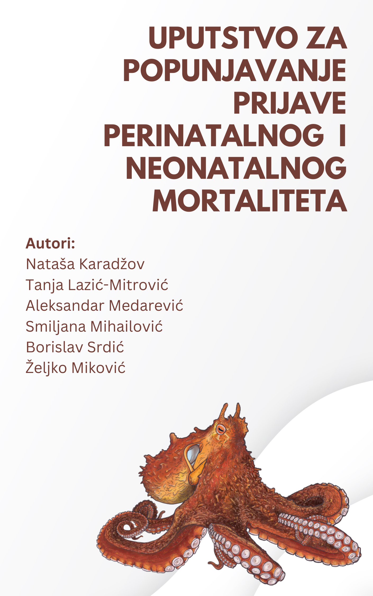

Uputstvo za popunjavanje prijave perinatalnog i neonatalnog mortaliteta
Uputstvo za popunjavanje prijave perinatalnog moratliteta

Perinatalni mortalitet predstavlja smrtnost uključuje kasnu fetalnu smrtnosti i smrtnost novorođenčadi tokom prve nedelje života. Prema podacima Svetske zdravstvene organizacije (SZO) za 2019, stopa perinatalne smrtnosti u Srbiji je iznosila 5.4 na 1000 rođene dece izvor. Prosek u Evropskom regionu SZO bio je 6.7 u istoj godini izvor. Stopa neonatalnog mortaliteta u Srbiji bila je 3.8 na 1000 živorođene dece, a u Evropskom regionu bila je 4.6 u 2019 izvor. Proseci na nivou Evropske unije bile su 5.5 i 2.5 u istoj godini izvor izvor.
Ovo uputstvo sadrži spisak pitanja i objašnjenja za ista za koja verujemo da će Vam biti od koristi pri prikupljanju podataka.
Na slici je Veliki pacifički oktopus (Enteroctopus dofleini). Ovaj glavonožac je verovatno najveća vrsta oktopusa, sa prosečnom težinom od 15 kilograma i prosečnim rasponom od 4.3 metra. Česte su atrakcije u akvarijumima zbog svoje impozantne veličine i raskošne boje.
Pored veličine, krasi je i zavidni nivo inteligenicije. Pacifički oktopus je najinteligentniji beskičmenjak. Mogu da prepoznaju ljude s kojim često dolaze i kontakt, pri čemu menjaju boju i teksturu tela. Imaju sposobnost da rešavaju jednostavne zadatke, otvaraju flaše i alate. Često prave štetu otvarajući ventile akvarijuma ili rastavljajuči skupu opremu.
Velika pacifička hobotnica nije samo izvanredno stvorenje, već i izuzetna majka. Za razliku od mnogih drugih životinja koje polažu jaja i ostavljaju svoje potomstvo da se brinu sami za sebe, ženka hobotnice se trudi da zaštiti svoje mlade i brine o njima. Nakon što je pažljivo odabrala savršeno mesto za svoja jaja, ona neprestano brine o njima, obezbeđujući da imaju dovoljno kiseonika tako što neprestano raspršuju vodu preko njih svojim delikatnim rukama. Majka nikad ne napušta mrestilište i šest meseci dok traje razvoj jaja, živi isključivoo koristeći zalihe telesnih masnoća.
Kada se jaja izlegu, odanost majke hobotnice postaje još očiglednija. Ona se čvrsto drži svog legla nekoliko nedelja, čuvajući ih od predatora sa nepokolebljivom odlučnošću. Kao da to nije dovoljno, ona marljivo čisti i provetrava jazbinu u kojoj borave njene bebe, stvarajući bezbedan prostor gde mogu da napreduju. Njeni neumorni napori su svi u službi obezbeđivanja opstanka budućih generacija velikih pacifičkih hobotnica.
Izjava zahvalnosti
Ovo uputstvo je nastalo uz veliku podršku Dečjeg fonda Ujedinjenih nacija (United Nations Children’s Fund- UNICEF). UNICEF se finansira isključivo dobrovoljnim prilozim, poklonima i prodajom UNICEF-ovih čestitki. Ako želite da se priključite Klubu prijatelja UNICEF-a i podržite aktivnosti ove organizacije kliknite na link.